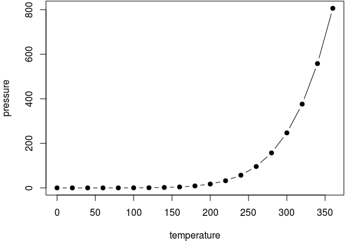

Chapter 2 Components
In this chapter, we show the syntax of some basic components of a book, including R code, figures, tables, citations, and so on. First we start with the syntax of Pandoc’s Markdown.
2.1 Markdown syntax
We give a very brief introduction to Pandoc’s Markdown in this section. Readers who are familiar with Markdown can skip this section. The comprehensive syntax of Pandoc’s Markdown can be found on the Pandoc website http://pandoc.org.
You can make text italic by surrounding it with underscores or asterisks, e.g., _text_ or *text*. For bold text, use two underscores (__text__) or asterisks (**text**). Text surrounded by ~ will be converted to a subscript (e.g., H~2~SO~4~ renders H2SO4), and similarly, two carets like ^ produces a superscript (e.g., ClO^-^ renders ClO-). To mark text as inline code, use a pair of backticks, e.g., `code`2. Small caps can be produced by the HTML tag span, e.g., <span style="font-variant:small-caps;">Small caps</span> renders Small caps. Links are created using [text](link), e.g., [RStudio](http://www.rstudio.com), and the syntax for images is similar: just add an exclamation mark, e.g., . Footnotes are put inside the square brackets after a caret ^[], e.g., ^[This is a footnote.]. We will talk about citations in Section 2.7. Section headers can be written after a number of pound signs, e.g.,
# First-level header
## Second-level header
### Third-level headerUnordered list items start with *, -, or +, and you can nest one list within another list by indenting the sub-list by four spaces, e.g.,
- one item
- one item
- one item
- one item
- one itemThe output is:
- one item
- one item
- one item
- one item
- one item
Ordered list items start with numbers (the rule for nested lists is the same as above), e.g.,
1. the first item
2. the second item
3. the third itemThe output does not look too much different with the Markdown source:
- the first item
- the second item
- the third item
Blockquotes are written after >, e.g.,
> "I thoroughly disapprove of duels. If a man should challenge me,
I would take him kindly and forgivingly by the hand and lead him
to a quiet place and kill him."
>
> --- Mark TwainThe actual output:
“I thoroughly disapprove of duels. If a man should challenge me, I would take him kindly and forgivingly by the hand and lead him to a quiet place and kill him.”
— Mark Twain
Plain code blocks can be written after three or more backticks, and you can also indent the blocks by four spaces, e.g.,
```
This text is displayed verbatim / preformatted
```
Or indent by four spaces:
This text is displayed verbatim / preformattedInline LaTeX equations can be written in a pair of dollar signs using the LaTeX syntax, e.g., $f(k) = {n \choose k} p^{k} (1-p)^{n-k}$ (actual output: \(f(k)={n \choose k}p^{k}(1-p)^{n-k}\)); math expressions of the display style can be written in a pair of double dollar signs, e.g., $$f(k) = {n \choose k} p^{k} (1-p)^{n-k}$$, and the output looks like this:
\[f\left(k\right)=\binom{n}{k}p^k\left(1-p\right)^{n-k}\]
To number and refer to equations, put them in the equation environments and assign labels to them, e.g.,
\begin{equation}
f\left(k\right) = \binom{n}{k} p^k\left(1-p\right)^{n-k}
\label{eq:binom}
\end{equation}It renders the equation below:
\begin{equation} f\left(k\right)=\binom{n}{k}p^k\left(1-p\right)^{n-k} \label{eq:binom} \end{equation}You may refer to it using \@ref(eq:binom), e.g., see Equation \ref{eq:binom}. Due to some technical constraints, you must label your equations with the prefix eq: in bookdown.
2.2 R code
There are two types of R code in R Markdown/knitr documents: R code chunks, and inline R code. The syntax for the latter is `r R_CODE`, and it can be embedded inline with other document elements. R code chunks look like plain code blocks, but has {r} after the three backticks and (optionally) chunk options inside {}, e.g.,
```{r chunk-label, echo = FALSE, fig.cap = 'A figure caption.'}
1 + 1
rnorm(10) # 10 random numbers
plot(dist ~ speed, cars) # a scatterplot
```To learn more about knitr chunk options, see Xie (2015) or http://yihui.name/knitr/options. For books, additional R code can be executed before/after each chapter; see before_chapter_script and after_chapter_script in Section 1.4.
2.3 Figures
By default, figures have no captions in the output generated by knitr, which means they will just be placed wherever they were generated in the R code. Below is such an example.
par(mar = c(4, 4, 0.1, 0.1))
plot(pressure, pch = 19, type = "b")
The disadvantage of typesetting figures in this way is that when there is not enough space on the current page to place a figure, it may either reach the bottom of the page (hence exceeds the page margin), or be pushed to the next page, leaving a large white margin at the bottom of the current page. That is basically why there are “floating environments” in LaTeX: elements that cannot be split over multiple pages (like figures) are put in floating environments, so they can float to a page that has enough space to hold them. There is also a disadvantage of floating things forward or backward, though. That is, readers may have to jump to a different page to find the figure mentioned on the current page. This is simply a natural consequence of having to typeset things on multiple pages of fixed sizes. This issue does not exist in HTML, however, since everything can be placed continuously on one single page (presumably with infinite height), and there is no need to split anything across multiple pages of the same page size.
If we assign a figure caption to a code chunk via the chunk option fig.cap, R plots will be put into figure environments, which will be automatically labeled and numbered, and can also be cross-referenced. The label of a figure environment is generated from the label of the code chunk, e.g., if the chunk label is foo, the figure label will be fig:foo (the prefix fig: is added before foo). To reference a figure, use the syntax \@ref(label)3, where label is the figure label, e.g., fig:foo.
If you want to cross-reference figures or tables generated from a code chunk, please make sure the chunk label only contains alphanumeric characters (a-z, A-Z, 0-9) and dashes (-). Other characters do not qualify.
The chunk option fig.asp can be used to set the aspect ratio of plots, i.e., the ratio of figure height/width. If the figure width is 6 inches (fig.width = 6) and fig.asp = 0.7, the figure height will be automatically calculated from fig.width * fig.asp = 6 * 0.7 = 4.2. Figure 2.1 is an example using the chunk options fig.asp = 0.7, fig.width = 6, and fig.align = 'center', generated from the code below:
par(mar = c(4, 4, 0.1, 0.1))
plot(pressure, pch = 19, type = "b")
Figure 2.1: A figure example with the specified aspect ratio, width, and alignment.
The actual size of a plot is determined by the chunk options fig.width and fig.height (the size of the plot generated from a graphical device), and we can specify the output size of plots via the chunk options out.width and out.height. The possible value of these two options depends on the output format of the document. For example, out.width = '30%' is a valid value for HTML output, but not for LaTeX/PDF output. However, knitr will automatically convert a percentage value for out.width of the form x% to (x / 100) \linewidth, e.g., out.width = '70%' will be treated as .7\linewidth when the output format is LaTeX. This makes it possible to specify a relative width of a plot in a consistent manner. Figure 2.2 is an example of out.width = 70%.
par(mar = c(4, 4, 0.1, 0.1))
plot(cars, pch = 19)Figure 2.2: A figure example with a relative width 70%.
If you want to put multiple plots in one figure environment, you must use the chunk option fig.show = 'hold' to hold multiple plots from a code chunk and include them in one environment. You can also place plots side by side if the sum of the width of all plots is smaller than or equal to the current line width. For example, if two plots have the same width 50%, they will be placed side by side. Similarly, you can specify out.width = '33%' to arrange three plots on one line. Figure 2.3 is an example of two plots, each with a width 50%.
par(mar = c(4, 4, 0.1, 0.1))
plot(pressure, pch = 19, type = "b")
plot(cars, pch = 19)Figure 2.3: Two plots placed side by side.
Sometimes you may have certain images that are not generated from R code, and you can include them them in R Markdown via the function knitr::include_graphics(). Figure 2.4 is an example of three knitr logos included in a figure environment. You may pass one or multiple image paths to the include_graphics() function, and all chunk options that apply to normal R plots also apply to these images, e.g., you can use out.width = '33%' to set the widths of these images in the output document.
knitr::include_graphics(rep("images/knit-logo.png", 3))Figure 2.4: Three knitr logos included in the document from an external PNG image file.
There are a few advantages of using include_graphics():
- You do not need to worry about the document output format, e.g., when the output format is LaTeX, you may have to use the LaTeX command
\includegraphics{}to include an image, and when the output format is Markdown, you have to use. The functioninclude_graphics()in knitr takes care of these details automatically. - The syntax for controlling the image attributes is the same as when images are generated from R code, e.g., chunk options
fig.cap,out.width, andfig.showstill have the same meanings. include_graphics()is smart enough to use PDF graphics automatically when the output format is LaTeX and the PDF graphics files exist, e.g., an image pathfoo/bar.pngcan be automatically replaced withfoo/bar.pdfif the latter exists. PDF images often have better qualities than raster images in LaTeX/PDF output. Of course, you can disable this feature byinclude_graphics(auto_pdf = FALSE)if you do not like it.
2.4 Tables
For now, the most convenient way to generate a table is the function knitr::kable(), because there are some internal tricks in knitr to make it work with bookdown and users do not have to know anything about these implementation details. We will explain how to use other packages and functions later in this section.
Like figures, tables with captions will also be numbered and can be referenced. The kable() function will automatically generate a label for a table environment, which is the prefix tab: plus the chunk label. For example, the table label for a code chunk with the label foo will be tab:foo, and we can still use the syntax \@ref(label) to reference the table. Table 2.1 is a simple example.
knitr::kable(
head(mtcars, 10), booktabs = TRUE,
caption = 'A table of the first 10 rows of the mtcars data.'
)| mpg | cyl | disp | hp | drat | wt | qsec | vs | am | gear | carb | |
|---|---|---|---|---|---|---|---|---|---|---|---|
| Mazda RX4 | 21.0 | 6 | 160.0 | 110 | 3.90 | 2.620 | 16.46 | 0 | 1 | 4 | 4 |
| Mazda RX4 Wag | 21.0 | 6 | 160.0 | 110 | 3.90 | 2.875 | 17.02 | 0 | 1 | 4 | 4 |
| Datsun 710 | 22.8 | 4 | 108.0 | 93 | 3.85 | 2.320 | 18.61 | 1 | 1 | 4 | 1 |
| Hornet 4 Drive | 21.4 | 6 | 258.0 | 110 | 3.08 | 3.215 | 19.44 | 1 | 0 | 3 | 1 |
| Hornet Sportabout | 18.7 | 8 | 360.0 | 175 | 3.15 | 3.440 | 17.02 | 0 | 0 | 3 | 2 |
| Valiant | 18.1 | 6 | 225.0 | 105 | 2.76 | 3.460 | 20.22 | 1 | 0 | 3 | 1 |
| Duster 360 | 14.3 | 8 | 360.0 | 245 | 3.21 | 3.570 | 15.84 | 0 | 0 | 3 | 4 |
| Merc 240D | 24.4 | 4 | 146.7 | 62 | 3.69 | 3.190 | 20.00 | 1 | 0 | 4 | 2 |
| Merc 230 | 22.8 | 4 | 140.8 | 95 | 3.92 | 3.150 | 22.90 | 1 | 0 | 4 | 2 |
| Merc 280 | 19.2 | 6 | 167.6 | 123 | 3.92 | 3.440 | 18.30 | 1 | 0 | 4 | 4 |
If you want to put multiple tables in a single table environment, just wrap the data objects (usually data frames in R) into a list. See Table 2.2 for an example.
knitr::kable(
list(
head(iris[,1:2],3),
head(mtcars[,1:3],5)
),
caption = 'A Tale of Two Tables.', booktabs = TRUE
)
|
|
When you do not want a table to float in PDF, you may use the LaTeX package longtable, which can break a table across multiple pages. To use longtable, just pass longtable = TRUE to kable(), and make sure to include \usepackage{longtable} in the LaTeX preamble (see Section 4.1 for how to customize the LaTeX preamble). Of course, this is irrelevant to HTML output, since tables in HTML do not need to float.
knitr::kable(
iris[1:100, ], longtable = TRUE, booktabs = TRUE,
caption = 'A table generated by the longtable package.'
)| Sepal.Length | Sepal.Width | Petal.Length | Petal.Width | Species |
|---|---|---|---|---|
| 5.1 | 3.5 | 1.4 | 0.2 | setosa |
| 4.9 | 3.0 | 1.4 | 0.2 | setosa |
| 4.7 | 3.2 | 1.3 | 0.2 | setosa |
| 4.6 | 3.1 | 1.5 | 0.2 | setosa |
| 5.0 | 3.6 | 1.4 | 0.2 | setosa |
| 5.4 | 3.9 | 1.7 | 0.4 | setosa |
| 4.6 | 3.4 | 1.4 | 0.3 | setosa |
| 5.0 | 3.4 | 1.5 | 0.2 | setosa |
| 4.4 | 2.9 | 1.4 | 0.2 | setosa |
| 4.9 | 3.1 | 1.5 | 0.1 | setosa |
| 5.4 | 3.7 | 1.5 | 0.2 | setosa |
| 4.8 | 3.4 | 1.6 | 0.2 | setosa |
| 4.8 | 3.0 | 1.4 | 0.1 | setosa |
| 4.3 | 3.0 | 1.1 | 0.1 | setosa |
| 5.8 | 4.0 | 1.2 | 0.2 | setosa |
| 5.7 | 4.4 | 1.5 | 0.4 | setosa |
| 5.4 | 3.9 | 1.3 | 0.4 | setosa |
| 5.1 | 3.5 | 1.4 | 0.3 | setosa |
| 5.7 | 3.8 | 1.7 | 0.3 | setosa |
| 5.1 | 3.8 | 1.5 | 0.3 | setosa |
| 5.4 | 3.4 | 1.7 | 0.2 | setosa |
| 5.1 | 3.7 | 1.5 | 0.4 | setosa |
| 4.6 | 3.6 | 1.0 | 0.2 | setosa |
| 5.1 | 3.3 | 1.7 | 0.5 | setosa |
| 4.8 | 3.4 | 1.9 | 0.2 | setosa |
| 5.0 | 3.0 | 1.6 | 0.2 | setosa |
| 5.0 | 3.4 | 1.6 | 0.4 | setosa |
| 5.2 | 3.5 | 1.5 | 0.2 | setosa |
| 5.2 | 3.4 | 1.4 | 0.2 | setosa |
| 4.7 | 3.2 | 1.6 | 0.2 | setosa |
| 4.8 | 3.1 | 1.6 | 0.2 | setosa |
| 5.4 | 3.4 | 1.5 | 0.4 | setosa |
| 5.2 | 4.1 | 1.5 | 0.1 | setosa |
| 5.5 | 4.2 | 1.4 | 0.2 | setosa |
| 4.9 | 3.1 | 1.5 | 0.2 | setosa |
| 5.0 | 3.2 | 1.2 | 0.2 | setosa |
| 5.5 | 3.5 | 1.3 | 0.2 | setosa |
| 4.9 | 3.6 | 1.4 | 0.1 | setosa |
| 4.4 | 3.0 | 1.3 | 0.2 | setosa |
| 5.1 | 3.4 | 1.5 | 0.2 | setosa |
| 5.0 | 3.5 | 1.3 | 0.3 | setosa |
| 4.5 | 2.3 | 1.3 | 0.3 | setosa |
| 4.4 | 3.2 | 1.3 | 0.2 | setosa |
| 5.0 | 3.5 | 1.6 | 0.6 | setosa |
| 5.1 | 3.8 | 1.9 | 0.4 | setosa |
| 4.8 | 3.0 | 1.4 | 0.3 | setosa |
| 5.1 | 3.8 | 1.6 | 0.2 | setosa |
| 4.6 | 3.2 | 1.4 | 0.2 | setosa |
| 5.3 | 3.7 | 1.5 | 0.2 | setosa |
| 5.0 | 3.3 | 1.4 | 0.2 | setosa |
| 7.0 | 3.2 | 4.7 | 1.4 | versicolor |
| 6.4 | 3.2 | 4.5 | 1.5 | versicolor |
| 6.9 | 3.1 | 4.9 | 1.5 | versicolor |
| 5.5 | 2.3 | 4.0 | 1.3 | versicolor |
| 6.5 | 2.8 | 4.6 | 1.5 | versicolor |
| 5.7 | 2.8 | 4.5 | 1.3 | versicolor |
| 6.3 | 3.3 | 4.7 | 1.6 | versicolor |
| 4.9 | 2.4 | 3.3 | 1.0 | versicolor |
| 6.6 | 2.9 | 4.6 | 1.3 | versicolor |
| 5.2 | 2.7 | 3.9 | 1.4 | versicolor |
| 5.0 | 2.0 | 3.5 | 1.0 | versicolor |
| 5.9 | 3.0 | 4.2 | 1.5 | versicolor |
| 6.0 | 2.2 | 4.0 | 1.0 | versicolor |
| 6.1 | 2.9 | 4.7 | 1.4 | versicolor |
| 5.6 | 2.9 | 3.6 | 1.3 | versicolor |
| 6.7 | 3.1 | 4.4 | 1.4 | versicolor |
| 5.6 | 3.0 | 4.5 | 1.5 | versicolor |
| 5.8 | 2.7 | 4.1 | 1.0 | versicolor |
| 6.2 | 2.2 | 4.5 | 1.5 | versicolor |
| 5.6 | 2.5 | 3.9 | 1.1 | versicolor |
| 5.9 | 3.2 | 4.8 | 1.8 | versicolor |
| 6.1 | 2.8 | 4.0 | 1.3 | versicolor |
| 6.3 | 2.5 | 4.9 | 1.5 | versicolor |
| 6.1 | 2.8 | 4.7 | 1.2 | versicolor |
| 6.4 | 2.9 | 4.3 | 1.3 | versicolor |
| 6.6 | 3.0 | 4.4 | 1.4 | versicolor |
| 6.8 | 2.8 | 4.8 | 1.4 | versicolor |
| 6.7 | 3.0 | 5.0 | 1.7 | versicolor |
| 6.0 | 2.9 | 4.5 | 1.5 | versicolor |
| 5.7 | 2.6 | 3.5 | 1.0 | versicolor |
| 5.5 | 2.4 | 3.8 | 1.1 | versicolor |
| 5.5 | 2.4 | 3.7 | 1.0 | versicolor |
| 5.8 | 2.7 | 3.9 | 1.2 | versicolor |
| 6.0 | 2.7 | 5.1 | 1.6 | versicolor |
| 5.4 | 3.0 | 4.5 | 1.5 | versicolor |
| 6.0 | 3.4 | 4.5 | 1.6 | versicolor |
| 6.7 | 3.1 | 4.7 | 1.5 | versicolor |
| 6.3 | 2.3 | 4.4 | 1.3 | versicolor |
| 5.6 | 3.0 | 4.1 | 1.3 | versicolor |
| 5.5 | 2.5 | 4.0 | 1.3 | versicolor |
| 5.5 | 2.6 | 4.4 | 1.2 | versicolor |
| 6.1 | 3.0 | 4.6 | 1.4 | versicolor |
| 5.8 | 2.6 | 4.0 | 1.2 | versicolor |
| 5.0 | 2.3 | 3.3 | 1.0 | versicolor |
| 5.6 | 2.7 | 4.2 | 1.3 | versicolor |
| 5.7 | 3.0 | 4.2 | 1.2 | versicolor |
| 5.7 | 2.9 | 4.2 | 1.3 | versicolor |
| 6.2 | 2.9 | 4.3 | 1.3 | versicolor |
| 5.1 | 2.5 | 3.0 | 1.1 | versicolor |
| 5.7 | 2.8 | 4.1 | 1.3 | versicolor |
If you decide to use other packages to generate tables, you have to make sure the label for the table environment appears in the beginning of the table caption in the form (\#label), where label must have the prefix tab:. You have to be very careful about the portability of the table generating function: it should work for both HTML and LaTeX output automatically, so it must consider the output format internally (check knitr::opts_knit$get('pandoc.to')). When writing out an HTML table, the caption must be written in the <caption></caption> tag. For simple tables, kable() should suffice. If you have to create complicated tables (e.g., with certain cells spanning across multiple columns/rows), you will have to take the aforementioned issues into consideration.
2.5 Cross-references
We have explained how cross-references work for figures (Section 2.3) and tables (Section 2.4). In fact, you can also reference sections using the same syntax \@ref(label), where label is the section ID. By default, Pandoc will generate an ID for all section headers, e.g., a section # Hello World will have an ID hello-world. We recommend you to manually assign an ID to a section header to make sure you do not forget to update the reference label after you change the section header. To assign an ID to a section header, simply add {#id} to the end of the section header.
When a referenced label cannot be found, you will see two question marks like ??, as well as a warning message in the R console when rendering the book.
2.6 Custom blocks
You can generate custom blocks using the block engine in knitr, i.e., the chunk option engine = 'block', or the more compact syntax ```{block}. This engine should be used in conjunction with the chunk option type, which takes a character string. When the block engine is used, it generates a <div> to wrap the chunk content if the output format is HTML, and a LaTeX environment if the output is LaTeX. The type option specifies the class of the <div> and the name of the LaTeX environment. For example, the HTML output of this chunk
```{block, type='FOO'}
Some text for this block.
```will be this:
<div class="FOO">
Some text for this block.
</div>and the LaTeX output will be this:
\begin{FOO}
Some text for this block.
\end{FOO}It is up to the book author how to define the style of the block. You can define the style of the <div> in CSS and include it in the output via the includes option in the YAML metadata. Similarly, you may define the LaTeX environment via \newenvironment and include the definition in the LaTeX output via the includes option. For example, we may save the following style in a CSS file, say, style.css:
div.FOO {
font-weight: bold;
color: red;
}And the YAML metadata of the R Markdown document can be:
---
output:
bookdown::html_chapters:
includes:
in_header: style.css
---We have defined a few types of blocks for this book to show notes, tips, and warnings, etc. Below are some examples:
R is free software and comes with ABSOLUTELY NO WARRANTY. You are welcome to redistribute it under the terms of the GNU General Public License versions 2 or 3. For more information about these matters see http://www.gnu.org/licenses/.
R is free software and comes with ABSOLUTELY NO WARRANTY. You are welcome to redistribute it under the terms of the GNU General Public License versions 2 or 3. For more information about these matters see http://www.gnu.org/licenses/.
R is free software and comes with ABSOLUTELY NO WARRANTY. You are welcome to redistribute it under the terms of the GNU General Public License versions 2 or 3. For more information about these matters see http://www.gnu.org/licenses/.
R is free software and comes with ABSOLUTELY NO WARRANTY. You are welcome to redistribute it under the terms of the GNU General Public License versions 2 or 3. For more information about these matters see http://www.gnu.org/licenses/.
R is free software and comes with ABSOLUTELY NO WARRANTY. You are welcome to redistribute it under the terms of the GNU General Public License versions 2 or 3. For more information about these matters see http://www.gnu.org/licenses/.
2.7 Citations
Although Pandoc supports multiple ways of writing citations, we recommend you to use BibTeX databases because they work best with LaTeX/PDF output. Pandoc can process other types of bibliography databases with the utility pandoc-citeproc (https://github.com/jgm/pandoc-citeproc), but it may not render certain bibliography items correctly (especially in case of multiple authors). With BibTeX databases, you will be able to define the bibiliography style if it is required by a certain publisher or journal.
A BibTeX database is a plain-text file (with the conventional filename extension .bib) that consists of bibliography entries like this:
@Manual{R-base,
title = {R: A Language and Environment for Statistical Computing},
author = {{R Core Team}},
organization = {R Foundation for Statistical Computing},
address = {Vienna, Austria},
year = {2015},
url = {https://www.R-project.org/},
}A bibliography entry starts with @type{, where type may be article, book, manual, and so on. Then there is a citation key, like R-base in the above example. To cite an entry, use @key or [@key] (the latter puts the citation in braces), e.g., @R-base is rendered to (???), and [@R-base] generates “(???)”. If you are familiar with the natbib package in LaTeX, @key is basically \citet{key}, and [@key] is equivalent to \citep{key}.
There are a number of fields in a bibliography entry, such as title, author, and year, etc. You may see https://en.wikipedia.org/wiki/BibTeX for possible types of entries and fields in BibTeX.
There is a helper function write_bib() in knitr to generate BibTeX entries automatically for R packages. Note it only generates one BibTeX entry for the package itself at the moment, whereas a package may contain multiple entries in the CITATION file, and some entries are about the publications related to the package. These entries are ignored by write_bib().
# the second argument can be a .bib file
knitr::write_bib(c("knitr", "stringr"), "")@Manual{R-knitr,
title = {knitr: A General-Purpose Package for Dynamic Report Generation in R},
author = {Yihui Xie},
year = {2016},
note = {R package version 1.12.22},
url = {http://yihui.name/knitr/},
}
@Manual{R-stringr,
title = {stringr: Simple, Consistent Wrappers for Common String Operations},
author = {Hadley Wickham},
year = {2015},
note = {R package version 1.0.0},
url = {https://CRAN.R-project.org/package=stringr},
}Once you have got one or multiple .bib files, you may use the field bibliography in the YAML metadata of your R Markdown document, and you can also specify the bibliopgraphy style via biblio-style (this only applies to PDF output), e.g.,
---
bibliography: ["one.bib", "another.bib", "yet-another.bib"]
biblio-style: "apalike"
link-citations: true
---The field link-citations can be used to add internal links from the citation text of the author-year style to the bibilography entry in the HTML output.
2.8 HTML widgets
HTML widgets (???) were originally designed for HTML output only, and they require the availability of JavaScript, so they will not work in non-HTML output formats, such as LaTeX/PDF. Before knitr v1.13, you will get an error when you render HTML widgets to an output format that is not HTML. Since knitr v1.13, HTML widgets will be rendered automatically as screenshots taken via the webshot package (???). Of course, you need to install the webshot package. Additionally, you have to install PhantomJS (http://phantomjs.org), since it is what webshot uses to capture screenshots. Both webshot and PhantomJS can be installed automatically from R:
install.packages("webshot")
webshot::install_phantomjs()The function install_phantomjs() works for Windows, OS X, and Linux. You may also choose to download and install PhantomJS by yourself, if you are familiar with modifying the system environment variable PATH.
When knitr detects an HTML widget object in a code chunk, it either renders the widget normally when the current output format is HTML, or save the widget as an HTML page and calls webshot to capture the screen of the HTML page when the output format is not HTML. Here is an example of a table created from the DT package (???):
DT::datatable(iris)If you are reading this book as web pages now, you should see an interactive table generated from the above code chunk, e.g., you may sort the columns and search in the table. If you are reading a non-HTML version of this book, you should see a screenshot of the table. The screenshot may look a little different with the actual widget rendered in the web browser, due to the difference between a real web browser and PhantomJS’ virtual browser.
There are a number of knitr chunk options related to screen-capturing. First, if you are not satisfied with the quality of the automatic screenshots, or want a screenshot of the widget of a particular state (e.g., after you click on a certain column of a table), you may capture the screen manually, and provide your own screenshot via the chunk option screenshot.alt (alternative screenshots). This option takes the paths of images. If you have multiple widgets in a chunk, you can provide a vector of image paths. When this option is present, knitr will no longer call webshot to take automatic screenshots.
Second, sometimes you may want to force knitr to use static screenshots instead of rendering the actual widgets even on HTML pages. In this case, you can set the chunk option screenshot.force = TRUE, and widgets will always be rendered as static images. Note you can still choose to use automatic or custom screenshots.
Third, webshot has some options to control the automatic screenshots, and you may specify these options via the chunk option screenshot.opts, which takes a list like list(delay = 2, cliprect = 'viewport'). See the help page ?webshot::webshot for the full list of possible options, and the package vignette vignette('intro', package = 'webshot') has illustrated the effect of these options. Here the delay option can be important for widgets that take long time to render: delay specifies the number of seconds to wait before PhantomJS takes the screenshot. If you see an incomplete screenshot, you may want to specify a longer delay (the default is 0.2 seconds).
Fourth, if you feel it is slow to capture the screenshots, or do not want to do it every time the code chunk is executed, you may use the chunk option cache = TRUE to cache the chunk. Caching works for both HTML and non-HTML output formats.
Screenshots behave like normal R plots in the sense that many chunk options related to figures also apply to screenshots, including fig.width, fig.height, out.width, fig.cap, and so on. So you can specify the size of screenshots in the output document, and assign figure captions to them as well. The image format of the automatic screenshots can be specified via the chunk option dev, and possible values are pdf, png, and jpeg. The default for PDF output is pdf, and it is png for other types of output. Note pdf may not work as faithfully as png: sometimes there are certain elements on an HTML page that fail to render to the PDF screenshot, so you may want to use dev = 'png' even for PDF output. It depends on specific cases of HTML widgets, and you can try both pdf and png (or jpeg) before deciding which format is more desirable.
2.9 Web pages and Shiny apps
Similar to HTML widgets, arbitrary web pages can be embedded in the book. You can use the function knitr::include_url() to include a web page through its URL. When the output format is HTML, an iframe is used4; in other cases, knitr tries to take a screenshot of the web page (or use the custom screenshot you provided). All chunk options are the same as those for HTML widgets. One option that may require your special attention is the delay option: HTML widgets are rendered locally, so usually they are fast to load for PhantomJS to take screenshots, but an arbitrary URL may take longer to load, so you may want to use a larger delay value, e.g., use the chunk option screenshot.opts = list(delay = 5).
A related function is knitr::include_app(), which is very similar to include_url(), and it was designed for embedding Shiny apps via their URLs in the output. Its only difference with include_url() is that it automatically adds a query parameter ?showcase=0 to the URL, if no other query parameters are present in the URL, to disable the Shiny showcase mode, which is unlikely to be useful for screenshots or iframes. If you do want the showcase mode, just use include_url() instead of include_app(). Below is a Shiny app example (Figure 2.5):
knitr::include_app("https://yihui.shinyapps.io/miniUI/", height = "600px")Figure 2.5: A Shiny app created via the miniUI package: https://yihui.shinyapps.io/miniUI/.
Again, you will see a live app if you are reading an HTML version of this book, and a static screenshot if you are reading other types of formats. The above Shiny app was created using the miniUI package (???), which provides layout functions that are particularly nice for Shiny apps on small screens. If you use normal Shiny layout functions, you are likely to see vertical and/or horizontal scrollbars in the iframes because the page size is too big to fit an iframe. When the default width of the iframe is too small, you may use the chunk option out.width to change it. For the height of the iframe, use the height argument of include_url()/include_app().
Shiny apps may take even longer to load than usual URLs. You may want to use a conservative value for the delay option, e.g., 10. Needless to say, include_url() and include_app() require a working Internet connection, unless you have previously cached the chunk (but web pages inside iframes still will not work without an Internet connection).